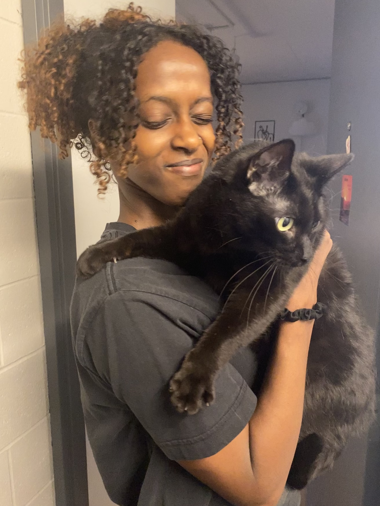
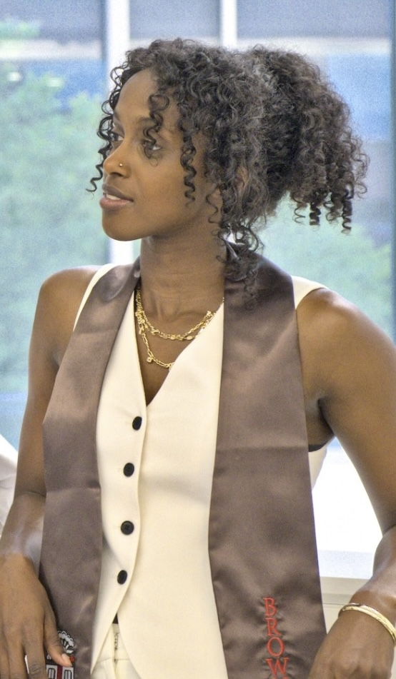
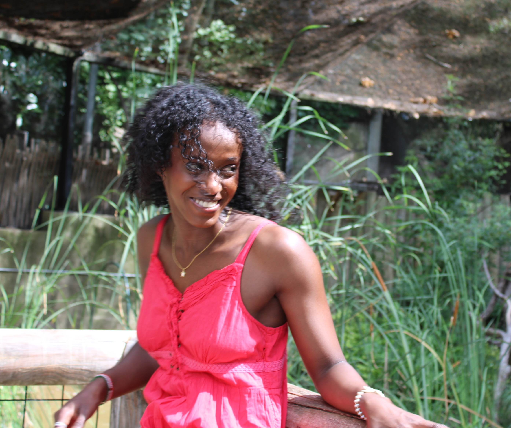
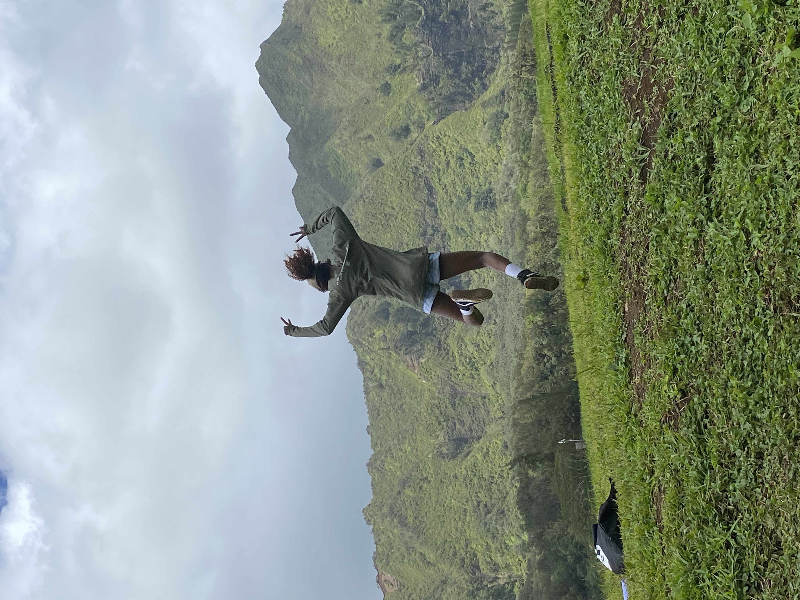

hi, I'm Muhiimmuhiim — important, in Somali.
It means 'important' in Somali. I'm working on living up to that.





At 11 years old, I secretly took the entrance exam to a boarding school in Somalilandan unrecognized country in the Horn of Africa simply to escape household chores and the traditional expectations placed on girls. I never imagined that decision would lead me to the United States for my education — let alone to Brown University, where I earned both my bachelor's and master's degrees in computer science (my mom still doesn't know what an Ivy League school is).
Since then, I've contributed to AI research and served as a teaching assistant for several CS courses at Brown. I'm particularly interested in using AI to address unemployment and expand access in places like home.
Outside of work, I enjoy calisthenics, soccer, strength training, and chasing a runner's high.
Currently looking for roles in AI/ML research and engineering.
Work
Research
DRIVE — Dynamic Relation Inference via Verb Embeddings
A new method for improving how vision-language models understand relationships between objects in images. Built CROCO, a refined dataset from COCO that distinguishes static from dynamic visual relationships, and designed a contrastive loss function that outperforms existing approaches on the task.
CLEAR GLASS — Contrastive Learning with Enhanced Abstract Representations
A method for teaching vision-language models to recognize abstract concepts beyond objects and relationships. Introduces MAGIC, a grouped image-caption dataset, and a novel grouped contrastive loss that induces models to encode higher-level semantic abstractions as an emergent capability — without ever being shown the higher-level concepts directly.
Projects
Cryptographic Voting for Multiple Candidates
Secure voting system for k-of-t elections using additively homomorphic ElGamal encryption, zero-knowledge proofs, blind RSA signatures, and threshold decryption. End-to-end verifiable while preserving ballot secrecy.
BERT Question-Answering System
Fine-tuned BERT for extractive QA on the Natural Questions benchmark. Custom loss functions and preprocessing brought competitive F1 (53.8%) without architectural changes.
Reddit Depression Detection
ML pipeline to detect depression signals in Reddit posts, combining LDA topic modeling and RoBERTa embeddings as features for random forest classifiers.
Craigslist Price Predictor
Multimodal price prediction combining VGG16 image features and spaCy text embeddings with gradient boosting. Handles both visual and textual listing data.
Writing
Essays on things I'm learning, thinking about, and trying to figure out.
Loading...